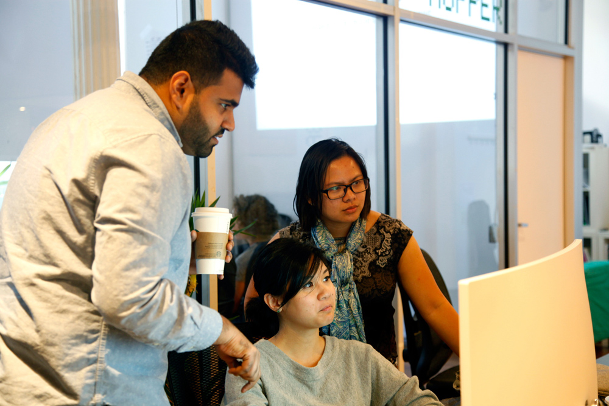
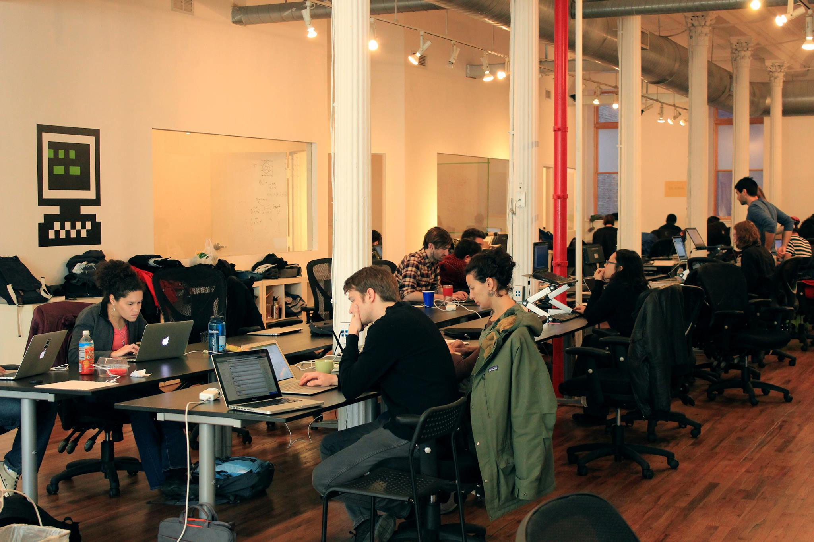

¿Quíenes somos?
El Circuito es un centro para todo aquel que quiera aprender de tecnología, programación o arte virtual.
Somos un centro autogestionado, financiado por los miembros y de la organización de ciertos eventos. Nuestra
forma de trabajar es colaborativa, siempre en un clima afable y con la intención de ayudar al recién llegado,
porque pensamos que la mejor forma de aprender es enseñar. Aunque somos un centro de enseñanza no reglada también
ofrecemos reconocimientos que pueden tener valía en el mercado laboral.

Nuestra Filosofía
Creemos que la educación es "el producto de la actividad del alumno", y que las personas aprenden más eficazmente cuando
tienen el control y la responsabilidad de su propia educación. Es por eso que EC es autodirigido y no coercitivo.
También es por eso que valoramos la motivación intrínseca sobre la motivación externa. Nuestro enfoque es dramáticamente
diferente al del sistema escolar moderno, que le dice a las personas qué, cuándo, cómo y dónde deben aprender.
La autodirección no implica aislamiento o falta de estructura. Más bien, implica que la colaboración debe ser voluntaria
y que la estructura no debe imponerse externamente.
